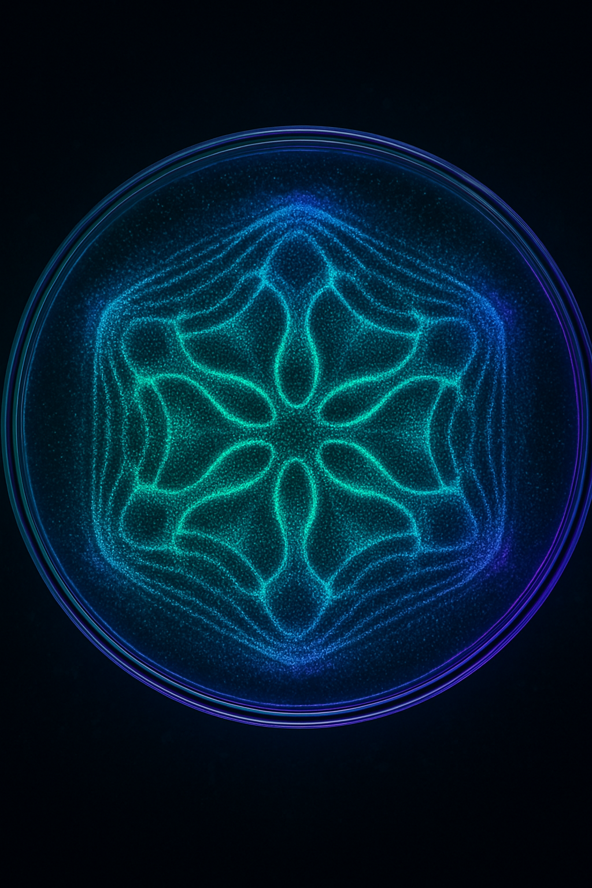

Sound, Signal & Human Experience
Sound is something we can measure—and something we experience. Its frequency content, rhythm, intensity, and texture help shape what we hear. The broader question is how different sounds may relate to attention, mood, alertness, motivation, and our sense of wellbeing.
The AI Frequency Analyzer brings real-time audio visualization and AI-assisted analysis together in an interactive space for observation and discovery. Explore audio signals, compare patterns, and consider how listening experiences may relate to focus, inspiration, relaxation, or a sense of restoration.
Observe the signal. Explore the experience. Stay curious.
Some effects of sound and music have been studied extensively; others remain uncertain or highly individual. This project encourages careful exploration rather than assuming that one frequency or tuning produces a predictable result for everyone.
Important safety & legal notes — read first
- Audio privacy: No audio recordings are stored or shared with anyone. We do not have access to recordings captured by the app.
- Microphone use: Audio capture requires microphone permission and may pick up nearby people or private conversations. Respect others' privacy, obtain consent when appropriate, and follow applicable local laws.
- Educational use: This application is for education, experimentation, and personal exploration. It is not a medical, psychological, or diagnostic instrument, and it does not provide treatment or clinical advice.
- Interpret results carefully: Audio measurements describe properties of a signal; they do not independently reveal a person's emotional state, health, or physiological response. AI-generated interpretations may be incomplete or inaccurate.
- Listening safety: Keep audio at a comfortable listening level and avoid prolonged exposure to loud sound. Stop an experiment if the sound causes discomfort.

About the AI Frequency Analyzer
The AI Frequency Analyzer is an interactive audio analysis application designed to make the structure of sound easier to observe and explore. It combines signal visualization with analytical tools to help users investigate frequency content, prominent spectral features, and changes in audio over time.
Beyond measurement, the project is interested in a larger question: how might the acoustic characteristics of sound relate to the way people experience it? The aim is to make room for curiosity while distinguishing measurable signal properties from personal impressions and conclusions supported by research.
Can Sound Relate to Focus, Inspiration, Relaxation, or Restoration?
Sound and music can interact with attention, mood, alertness, motivation, creativity, emotion, and other aspects of subjective experience. Researchers study whether features such as rhythm, loudness, tempo, pitch content, musical structure, and personal preference relate to concentration, creative thinking, perceived calm, or recovery after effort. Findings vary by outcome and context, and individual responses can differ considerably.
This makes the subject both practical and fascinating. Could one kind of sound help you settle into a task? Does a different soundscape feel more conducive to creative work or relaxation? Which qualities are measurable, which responses are personal, and which patterns would hold up under more controlled investigation?
The analyzer can help you examine the audio itself and support thoughtful exploration of these questions. It cannot determine how a sound will affect every listener, guarantee a particular mental or physical response, or establish therapeutic benefits. Treat your experience as a starting point for inquiry—not as proof of a universal effect.
What Is Frequency?
Frequency describes the number of cycles of a repeating process per second and is measured in hertz (Hz). In sound, it is one of the measurable properties that helps describe an audio signal.
Frequency is closely related to perceived pitch: lower-frequency tones are generally heard as lower in pitch, while higher-frequency tones are generally heard as higher. Pitch perception, however, is also influenced by context and by how a sound is presented.
Most everyday sounds contain multiple frequency components at the same time. Examining those components can help characterize tones, harmonics, resonances, and broadband noise, and show how a sound changes over time. Frequency analysis is a foundational tool in acoustics, audio engineering, communications, and digital signal processing—but a frequency measurement alone does not tell us how a listener will respond.
Understanding Sound Through Signal Analysis
Sound consists of pressure variations that propagate through a medium, such as air. A microphone converts these variations into an electrical signal, which can then be sampled and processed digitally.
Digital signal processing provides tools for examining the frequency content and temporal behavior of recorded audio. Techniques such as the Fast Fourier Transform (FFT) can represent a sampled signal in terms of its frequency components, making patterns that may be difficult to distinguish in the time domain easier to inspect.
These representations are useful for studying tonal components, harmonic structure, resonances, and noise. Their interpretation depends on factors such as microphone response, sampling rate, recording conditions, and analysis settings.
Reading a Spectral Display
A spectrum provides one view of an audio signal by showing how its measured magnitude or power is distributed across frequencies, depending on the analysis method. Peaks may correspond to prominent tones or harmonics, while broader features may reflect more complex sound or noise. A display is a useful representation of recorded data, not a complete account of the sound source or its effect on a person.
What Is Cymatics?
Cymatics explores how vibration can produce visible patterns in a physical medium. It offers an engaging way to see that sound-driven motion can create structure under the right conditions.
For example, when a plate is driven at particular frequencies, grains or other particles on its surface may gather into patterns associated with the plate's modes of vibration. The result depends on the geometry, material properties, excitation, and experimental setup.
These demonstrations are real, observable mechanical effects. Their implications should be kept in context: a pattern on a vibrating surface does not, by itself, demonstrate how unrelated systems work or show that a particular sound produces a specific psychological or physiological effect.
For this project, cymatics is an invitation to look closer, ask questions, and explore the relationship between sound, vibration, and observable patterns.
Project Mission
Our mission is to make sound analysis approachable while encouraging thoughtful exploration of how audio may relate to human experience. By bringing together signal processing, visualization, and AI-assisted interpretation, the project gives curious listeners a way to observe sound, compare patterns, and ask better questions.
The long-term interest is not to promise that certain frequencies unlock a guaranteed state of mind, but to explore what can be measured, what people report experiencing, and what further evidence would be needed to understand any relationship. Curiosity and scientific care belong together.
Development Goals
Future development may include expanded platform support, richer signal visualizations, additional analysis methods, and better ways to compare observations. A central goal is to make the tools easier to use while being clearer about what is directly measured, what is a personal response, and what remains a hypothesis to investigate.
Current Availability
Start with the browser-based analyzer, or download the desktop application for further experimentation. Available features can differ by version.
Future development may expand platform support and introduce additional signal analysis and visualization capabilities.
Join the Community
Sound is a familiar part of everyday life, but there is still plenty to explore about how different listening environments are experienced. Your questions, observations, and technical suggestions can help shape an open-ended project built around curiosity, careful measurement, and useful tools.